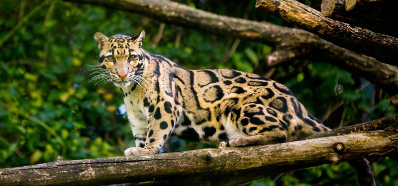

La Pantera Nebulosa
Alto animal, mi animal fav
Vive en las islas de Borneo y Sumatra, Neofelis diardi

Porque es mi animal favorito?
- Es una especie de pantera que se trepa por los árboles y que casi ni va x el piso.
- Ademas si lo crias de chico puede ser un animal domestico....
- Quiero uno.
Cuanto mide y cuanto pesa?
- Tiene una longitud de 60 a 110 cm.
- Las hembras un peso de 11 a 20 kg y los machos hasta 65 kg.